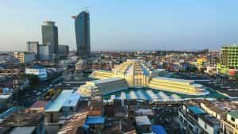

Sponsored Article is ROK's official account that publishes sponsored articles from advertisers. If you are interested hiring a sponsored article for your site, product, or service, visit our advertising page.


The following article was sponsored by Reid Kirchenbauer of InvestAsian
Cambodia probably isn’t the first place that comes to mind when thinking about offshore investment. In fact, those who’ve never been to the Southeast Asian country are surely more likely to create a mental image of poverty and genocide than capital growth.
But the days of the Khmer Rouge have long since ended and Cambodia is now a young democracy with one of the fastest growing economies in the world. Manufacturers, banks and foreign investors of all types are just now starting to see the opportunities to be had.
For years, a growing number of influential investors – such as my friend Andrew Henderson of Nomad Capitalist, seen below – have been focusing on Cambodia as one of the best frontier markets for young investors who want to take advantage of long-term growth trends.

For investors, a country’s economy can be broken down into one of three categories based on their stage of development.
Developed markets, such as the United States and Japan, are generally among the slowest growing. Population growth is often tepid (or even negative), markets are tightly regulated but easily accessible, and there are already large international companies in any industry you can think of.
In emerging markets such as China and Brazil, things are much faster paced. Manufacturing is usually a big part of the economy, foreign investment is at its peak, and local businesses are just beginning to expand globally in order to find their own opportunities abroad.
Beyond those are the frontier markets, which is what Cambodia is. These are the countries where the rapid growth and high potential for returns are just beginning – perfect for long term investors. It’s common for businesses which you may take for granted in your home country, such as convenience store chains and drive-thru restaurants, to not even exist yet which can make frontier markets an entrepreneur’s paradise.
As a result, frontier markets are less correlated with the rest of the world economy. Cambodia hasn’t had a recession in over 20 years. It skipped the Asian Financial Crisis of the 1990s, the tech-bubble of the early 2000s, and the more recent Global Financial Crisis of 2008.
While there’s no such thing as a “recession proof” country, frontier markets are as close as it gets. Most of the world is now dependent on each other. McDonalds, 7-Eleven and Walmart can be found almost anywhere and because of this, all the developed and emerging economies get sick too when the United States does. Frontier markets are an exception.

One of the challenges of frontier markets investment is accessibility, or rather lack thereof. You can’t just walk into any bank, set up a brokerage account and start buying shares.
While Cambodia does have actually have a stock market, there are exactly four listed companies and three of them are government institutions such as the port authority and department of water.
Instead, the best way to invest in Cambodia is through real estate. Phnom Penh, the nation’s capital, is the center of its growth. Expats are just beginning to rush here, along with the multinational firms, embassies, and forward-thinking startups which employ them, and city center properties are in strong demand.
But when it comes to quality apartments in Phnom Penh, there’s a lack of supply. The expats here often have salaries in the six-figure or high-five figure range, but the typical Cambodian accommodation isn’t much to look at.
Because of this, there’s great potential in buying, renovating, flipping and/or renting out properties. It’s common to buy an apartment for around $50,000, put around $15,000 worth of renovation into it, and then have a modern unit with a market value of close to $100,000. Rental yields commonly exceed 10% net.
It’s the operational aspect which is the hard part. Knowing a good rental agent, learning about the property market in Phnom Penh, and finding an honest contractor (which can be a difficult task in the US or Europe, let alone Cambodia) are all crucial.
The Khmer Ventures Property Fund has three apartments which achieve a 9.9% net rental yield for our investors, although capital appreciation over the long-term should raise that even higher.
Our properties are all prime city-center pieces of real estate which are strategically positioned. As Phnom Penh starts to look more like Bangkok and Ho Chi Minh City, developers of large malls and skyscrapers will need to go through us first and purchase our assets at a large premium to get the land they need.
We take transparency very seriously. Through our shareholders portal which is updated monthly, title-deeds, bank statements, and more are made available to all investors. The fund is structured as a Cambodian corporation which directly owns our properties. Our investors buy shares in the company, and are therefore the owners of the fund.
If you would like to invest in Cambodia, diversify your portfolio, and benefit from the growth of frontier markets, please use our online form to contact us.